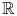
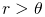
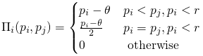
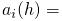
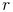
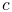

Event-Driven Collusion
1 Introduction
This write-up is intended to be the “white paper” to an Econometrica, AER, JET…submission. It will begin with a brief introduction that outlines a Bertrand game and the notion of collusion. It will then briefly outline some of the foundational as well as more current literature that investigate collusion in a Bertrand environment. Finally the introduction will clearly juxtapose an event-driven Bertrand game with the current literature.
The second section will outline the model in terms of an SFT-Net. It omits the fully rigorous specification of the network in favor of an intuitive explanation with the requisite notation. Note that this section also omits the “one step deviation principal” for event-driven games as well as the notion of subgame perfect/sequential equilibrium. Basically, all of this involves a “translation” of the idea of subgame perfect/sequential equilibrium in repeated games to an event-driven framework. It is a ton of tedious mathematical boilerplate but conceptually very simple. (On another note, it might make sense to describe something like an “event-driven equilibrium” that is similar to subgame perfect. For example, we can say something like “If all players’ internal state includes a component that represents the entire history of past observations, then if for all players and histories , cannot improve his expected utility by deviating, the strategy profile is an event-driven equilibrium. I’m sure there will be some gotchyas but it might be worth thinking along those lines)
The third section will present the results. These will be amended as new results come in.
1.1 Preliminaries
This just outlines the basic static and repeated Bertrand game. Can be skipped if you are familiar with “trigger strategies” The standard, static Bertrand example is as follows: Suppose there are firms. Each firm has identical per-unit cost . Firm chooses a price, in . Suppose there is a continuum of consumers on the interval with reservation price . Then, player ’s utility function is given by
|  | (1) |
As is standard, the only equilibrium in this game is when . This is easy to see since any equilibrium with , firms have the incentive to undercut one another by a tiny amount (from here an throughout, I will assume that firm can undercut a competitor who charges by charging but the profits are still computed as .
Of course, when the game is repeated in discrete time, the result change. First, suppose that the Bertrand game is repeated for a known and finite amount of time, , and each player has common discount rate . Now, player’s strategies are mappings from histories, , (all observations of past actions) to next action. Define the “finite trigger strategy” for player as  “play  in every period unless does not play . In that case, play forever.” It can be shown that this is not a (symmetric) Nash equilibrium strategy. To see why, note that in period , player will want to undercut since he does not receive any future benefit from not undercutting . Knowing this, in period , would no longer have an incentive not to undercut . This logic can be extrapolated back to period 1 and therefore the only Nash equilibrium is when both players charge .
Now, suppose the game is repeated infinitely and extend the finite trigger strategy to an infinite trigger strategy. We will now show that under a high enough discount rate, the infinite trigger strategy is a subgame perfect equilibrium. To see why, note that ’s total discounted utility under the trigger strategy (played by both players) is given by . Note that if undercuts , then his expected utility is given by since he gets the entire market share in the first period and then nothing after. Therefore, has an incentive to undercut in the first period iff or equivalently . We can also show that this is subgame perfect since if , given one player has deviated, it is weakly dominant for each player to charge .
1.2 Literature Review
Recent literature on Bertrand competition has taken two approaches. The first approach is to extend the game of perfect observability to understand other phenomenon. For example, [1] model a Bertrand game in which each firm’s per-unit cost dynamics are described by a two-state Markov chain. They show that there exists an equilibrium where all firms charge the reserve price in every period, regardless of their per-unit cost. Again, note that the firms’ pricing decisions are fully observable.
Another example with perfectly observable prices is [3]. This is a differential game in which players must also consume a renewable resource. Also note that in this game, the demand function is linear and not a reserve price. Nevertheless, the demand function and the parameters are known exactly to the players. The authors then show that a collusive equilibrium exists (although collusion was not the main focus of their paper). Again, this is a game with no uncertainty.
The second approach in extending Bertrand games is with secret price cuts. That is, players do not observe the action of the other players in the previous rounds. Instead, stochastic profits are realized in each period and firms base their continuation strategy off of such a signal. For example, [4] shows that there exists a collusive equilibrium in which players play the collusive price if the total profit of everyone is greater than a certain constant and then revert to marginal cost pricing for periods if the sum total of profits is below , and then return. In other words, there is a finite punishment period in which the players cut prices.
Other work such as [5] and [2] show how there exist information sharing mechanisms that facilitate collusion. For example, after each period firms may have an incentive to share their private profit information. For example, if firms profits are correlated, each has an incentive to truthfully announce their profits because if they announce profits that are “far away” from their opponent, the opponent will think they are lying and therefore enter a punishment phase. Again, these models assume private profit and pricing information.
Note the difference between the two approaches to the repeated Bertrand game. One is where all information is known and observable (demand, prices, profits, etc) and the other is when firms receive a signal that is correlated with both demand and the other player’s prices. That is, firms can choose to undercut the market but they run the risk of their signal being too strong. The event-driven framework falls into the second category of secrete price cuts. However, the nature of the “correlation” between prices and information is different. In the event-driven framework, a player can undercut the market without generating any signal to the other players. The reason is that in the event-driven framework, the players observe their opponents prices subject to a stochastic lag. That is, if player under undercuts the market at time , player might not find out about the undercut until time . However, neither nor know exactly when prices will be made public. Therefore, it might be optimal for to undercut the market for a fixed amount of time and then, after realizing he has not been caught, return to the collusive price. In other words, players in the event-driven Bertrand model do not focus on what their information tells them about the other player’s strategies but when they will receive information about other player’s strategies.
Although this will be made clearer in the following section, in the event-driven Bertrand model, the players almost always do not know demand or the other players’ price. They only observe signals in sporadic intervals and there is no restriction that players must learn of a change immediately after it happens. In other words, the event-driven Bertrand game is a new version of secret price cuts (in which players are not apprised of the exact state of demand or other players’ prices).
2 Model
There is a market node whose state space consists of (as well as the prices of each firm’s product). The market
changes states spontaneously at rate  .
Intuitively, there are two reserve prices. The market alternates
between these reserve prices at rate
.
Intuitively, there are two reserve prices. The market alternates
between these reserve prices at rate  . At rate ,
the market emits a message that travels instantaneously to player
1 that informs player 1 of the reserve price. This message is
noiseless. At a rate of , the market does the same but the
message is directed to player 2.
. At rate ,
the market emits a message that travels instantaneously to player
1 that informs player 1 of the reserve price. This message is
noiseless. At a rate of , the market does the same but the
message is directed to player 2.
When player, receives a message, he must make two decisions. First, he must decide what price to charge in . Secondly, he can decide whether or not to send a message to player 2, indicating what message he just received. The players are not restricted to telling the truth and the message to the other player is costless. In other words, the players can engage in cheap talk.
The rewards for player given his price is , the other player’s price is and the reserve price is is given by:
| (2) |
In other words, the players split the market if they both charge below the reward price and charge the same price. If the players charge two different prices, the player with the lowest price captures the entire market. If player is undercut or is charging above the reserve price, then he earns zero reward. Here I normalize per unit cost to 0. Therefore, the term “marginal cost pricing” will be referred to the case when a firm charges 0.
Finally, the market sends messages to player 1 and player 2 simultaneously at rate and those messages traverse instantaneously. The messages reveal the price of each player’s product currently in the market. Upon receiving the public message, each player can decide to either revert to marginal cost pricing or maintain its current price.
There are a ton of assumptions built into this model. Without explaining, I just want to enumerate which ones can be relaxed.
-
1.
We can change from perfect substitutes to a case of linear demand.
-
2.
We can change to a case where firms also observe their profits instead of the exact state of the market.
-
3.
The public price message does not have to contain both players’ price. In other words, it could be at rate player 1’s price is known publicly and at rate , player 2’s price is known publicly. What is essential (at least for now) is that the price revelations are public (i.e. player 1 sometimes learns player 2’s price and player 2 knows player 1 learned player 2’s price.)
-
4.
We can change to a case where instead of public realizations of prices, there is a public realization of profits.
-
5.
We can extend to firms.
-
6.
We can extend to Cournot
-
7.
Upon receiving the public announcement, firms need not be limited to only changing their price to marginal cost pricing. However, the results will not be affected if this restriction is changed but the formal justification will be much more involved.
All of these assumptions are used to make the initial math easier and a bit cleaner. Each new assumption will add parameters and make the math messier but all (to some degree) are able to be relaxed.
Now, let’s define a collusive information sharing strategy as follows:
Truthful information sharing strategy: Upon receiving a message that the reserve price is (), inform the other player that the reserve price is (), set price equal to . Upon being told by the other player that the reserve price is (), set price equal to (). Upon receiving a public message that the the price of both players in the market is the same, take no action. Upon receiving a public message that the prices of the two firms in the market are not the same, set price equal to 0 forever
Intuitively, the truthful information sharing strategy is one in which all information is shared between the firms and the firms charge the reserve price whenever they are informed of it. The claim is that for specific parameter values, there exists a Nash equilibrium in which both players play the Truthful information sharing strategy.
3 Results
Below is an interactive plot (you need to install the Mathematica plugin, fairly simple) that illustrates the parameter region in which the truthful information sharing strategy exists. The shaded region is the “collusive” region.
As a “first pass” result, we see that firms have more incentive when is low (remember in continuous time, low means more value placed on future rewards) and the rate of public price revelation , (i.e. the rate of being caught), is high.
References
- [1] (2008) Collusion with persistent cost shocks. Econometrica 76 (3), pp. 493–540. External Links: ISSN 1468-0262, Link, Document Cited by: 1.2.
- [2] (2015) On communication and collusion. The American Economic Review. Cited by: 1.2.
- [3] (2015) On the markovian efficiency of bertrand and cournot equilibria. Journal of Economic Theory 155 (), pp. 332 – 358. Note: External Links: ISSN 0022-0531, Document, Link Cited by: 1.2.
- [4] (1984) Noncooperative collusion under imperfect price information. Econometrica 52 (1), pp. 87–100. External Links: ISSN 00129682, 14680262, Link Cited by: 1.2.
- [5] (2014) The power of communication. The American Economic Review 104 (11), pp. 3737–3751. Cited by: 1.2.
![[LOGO]]()